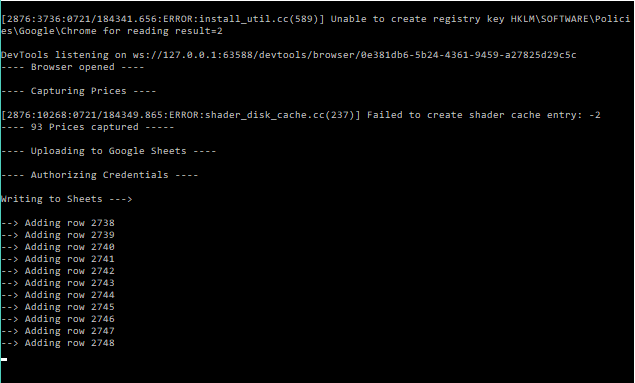

Automating Amazon Wishlist Tracking.
If you look at the great deal makers of our era – Warren Buffett and Mark Cuban, to name just a few – the one thing that separates them from the pack is their innate ability to identify and close lucrative deals..
Amazon curates and runs deals on a variety of different products. And to get the most out of our pockets, they have dynamic pricing in place to attract even the most price sensitive customers at their website. This differentiated pricing allows them to maximize their revenue. Now, you don’t need to be as good as Mark Cuban or Warren Buffett to identify best deals on Amazon. But probably you need someone watching them out for you. Here's is one approach.
First you create a wishlist of items on Amazon. This wishlist can easily be made public. The next thing is to scrape that wishlist every few hours. The task of scraping was delegated to python and running the same process multiple times a day to "Windows Task Scheduler". The extracted prices needs to be saved and appended to a file which in my case is a google spreadsheet. Next up, you would need those prices in a readable or more visual format, for which I have used Tableau. This Tableau workbook is available at any time of day.
Step 1 : Identifying elements in wishlist
Shown below is an example of an Amazon wish-list item. The fields available here are product name, price, rating and a bunch relevant-but-not-required-for-this-purpose information.

There were two approaches to fetching prices.
Approach 1:
One was to dig through the HTML, find relevant elements and capture text inside those elements
Approach 2 :
Read the entire text of a wishlist item and use regular expressions to extract relevant details.
I chose approach 2, as it provides me with some insurance against change element classes of the website in future. As long as the overall site structure remains the same, I will be able to extract prices.
Step 2 : Capturing Prices using Selenium & python
Selenium automates browsers!. That’s right and that’s what their webpage says. The best way to getting started with selenium in python is to read the documentation.
I used selenium to automate Google Chrome through chrome web-driver (which needs to be installed before starting up the process). The python script runs selenium which opens Google Chrome window, fetches the wishlist page and scrapes entire text for each wishlist item. Here is the full code.
# Load Libraries import time import pandas as pd import numpy as np import warnings import gspread from oauth2client.service_account import ServiceAccountCredentials from selenium import webdriver import json warnings.filterwarnings("ignore") def open_browser(): # Opens Chrome Browser path_to_chromedriver = 'E:/My Works/Python/Amazon_wishlist_tracker/chromedriver.exe' brow = webdriver.Chrome(executable_path = path_to_chromedriver) return brow def capture_prices(browser): # Go to Amazon wishlist browser.get('https://www.amazon.in/hz/wishlist/ls/2HHS9D5KS8VQF') time.sleep(3) for i in np.arange(20): browser.execute_script("window.scrollTo(0, {})".format(i*10000)) time.sleep(1) products = browser.find_elements_by_xpath("//div[@class='a-fixed-right-grid']") pdts = [] for item in products: pdts.append(item.text) pdts = pd.Series(pdts) names = [x[0] for x in pdts.str.split('\n')] pricesdf = pdts.str.extract(r'₹(\d{1,2}),(\d{1,2}),(\d{1,3})|₹(\d{1,3}),(\d{1,3})|₹(\d{1,3})') pricesdf.fillna('', inplace = True) prices = pd.DataFrame(names, columns = ['Item_Name']) prices['Price'] = pricesdf.sum(axis = 1) prices['Timestamp'] = str(pd.Timestamp.now()) prices.head() # print ("Prices Captured : ", len(prices)) price_dict = prices.to_dict('records') browser.quit() return price_dict def worksheet_writer(new_dict): # Write to worksheet scope = ['https://spreadsheets.google.com/feeds', 'https://www.googleapis.com/auth/drive'] credentials = ServiceAccountCredentials.from_json_keyfile_name('sumitsamazonwishilisttracking-f1146cfb6b6a.json', scope) gc = gspread.authorize(credentials) wks = gc.open('python-whishlist-tracking').sheet1 # Resize is required otherwise this unexpectly appends to 1001 row of sheet, # rather than at the end of the last data point len_records = len(wks.get_all_records()) + 1 wks.resize(len_records) print ('Writing to Sheets ---> \n ') for i in np.arange(len(new_dict)): wks.append_row([new_dict[i]['Item_Name'], new_dict[i]['Price'], new_dict[i]['Timestamp']]) row_num = len_records + i + 1 print ('--> Adding item {} at row {} \t'.format(i+1,row_num)) def main(): # Browser open print ('---- Opening Browser ----\n') browser = open_browser() print ('---- Browser opened ----\n') # Capture prices print ('---- Capturing Prices ----\n') this_dict = capture_prices(browser) print ('---- {} Prices captured ----- '.format(len(this_dict))) # Write to worksheet print ('---- Authorizing Credentials ----\n ') worksheet_writer(this_dict) print ('---- Appended captured prices to sheet ---- \n') if __name__=="__main__": main()
Step 3 : Uploading to Google Spreadsheet
This is a tricky part. Uploading to Google spreadsheet requires quite a bit of setup. To get around this, I referred to this youtube video. This setup essentially requires access to Google Sheets and Google Drive APIs. They will generate credentials which will help authorize python to make changes in the spreadsheet. Using the oauth2client package, you can authorize google sheets to upload items via your python app.
Uploading to sheets is also not instantaneous. This activity is conducted row by row. The batch process of uploading, at of time of this writing, is not available. With the help of gspread library, you can make edits to google spreadsheet.
Note : The first upload of the sheet will create 10,000 rows by default. The next run will then start from 10,001th row. This is taken care of in the code by removing empty cells first and then continuing with the process of appending the remaining items.
Step 4 : Scheduling Script Runs
In order to automate the entire process of fetching prices and storing them remotely in a spreadsheet, I turned to Windows’ inbuilt Task Scheduler. As the name suggests, it schedules a task to run based on a trigger. In this case, the trigger was time. I set it to run at 7:00 in the morning and then in every 3 hours. However, you can practically schedule it to run it as soon as every 5 minutes. The result is this console!

I referred to this youtube video for scheduling python scripts
Step 5 : Analyzing prices in Tableau
To make use of the scraped data, I used Tableau (public version) to fetch the online spreadsheet and created a dashboard listing minimum prices for each day, price trends along with some filters. Check out the link for Tableau dashboard.
I am using this dashboard to get the best deals on amazon.
Next Steps
There are a lot of improvements that can be done to this project at various levels. For instance, prices from other sources can be included to improve the chances of getting a bang for the buck. Although there are price comparison apps all around the web, they happen to work well for tracking a few items.
Also, the trend can be studied by the time of the day, weeks and months to find which time of the day most deals occur (this will be done as the dataset grows). For now, the model works for me and gives me what I need.